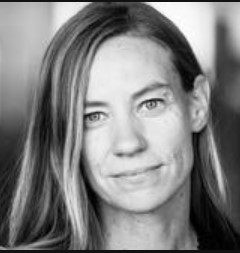

New York, (USA) (geboren) 1976-1979
Connecticut, (USA) 1979-1982 Sociale redenen, om in de natuur te wonenen
Jamaica 1982-1983 Sociale redenen, voor nieuwe cultuur
Connecticut 1983-1995 Sociale redenen, om terug naar family te gaan
Maine (USA) 1995-1996 Sociale redenen, om naar univeriteit te gaan
Panama 1996-1997 Economische redenen, weteschapelijke onderoezoek
Kenya 1997-1998 Sociale redenen, wetenschapelijke onderzoek
Californië 1998-2004 Sociale redenen, hogere school
Amsterdam 2004-2017 Ecnomische/Sociale redenen, om hooggeleerde te worden, Ook om een leven te straten met mijn vader
Nieuw Zeeland 2017-2018 Economische redenen, voor onderzoek
Amsterdam 2018-2021 Economische redenen, waar wij nu nog wonen 